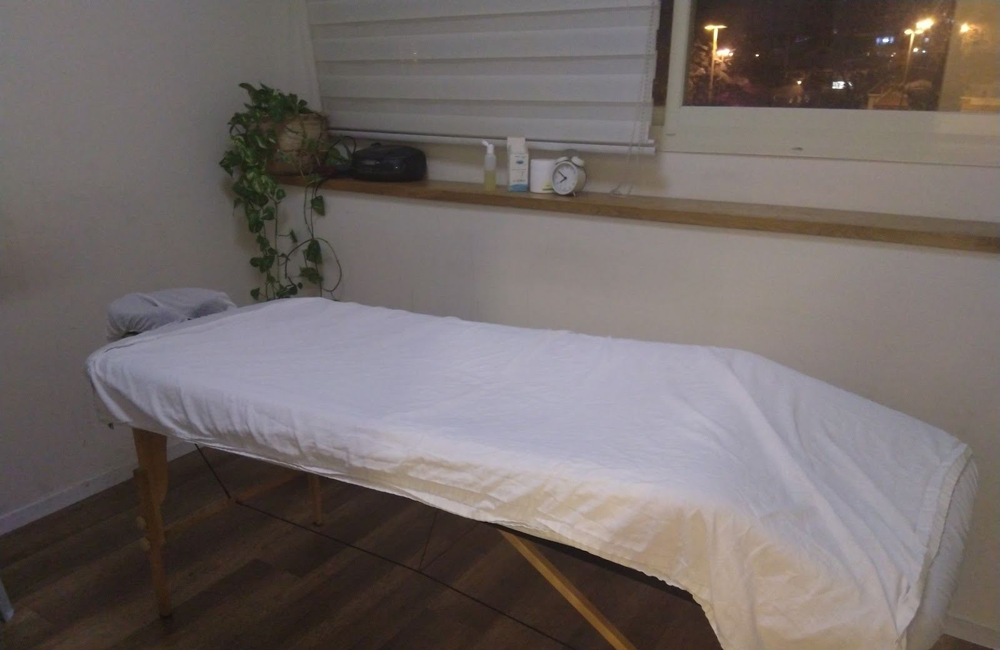
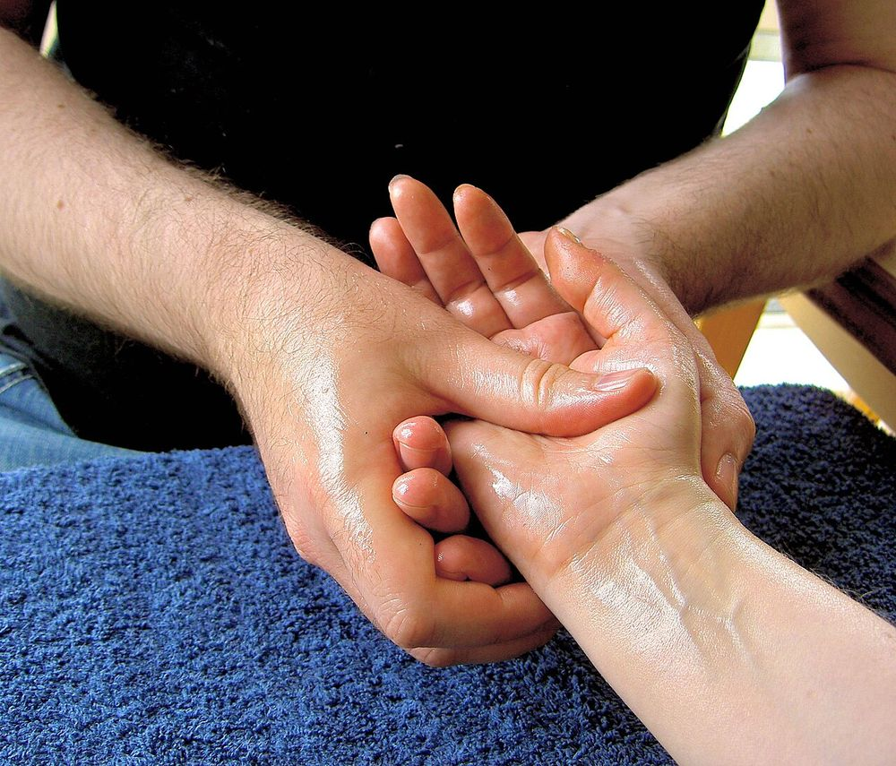
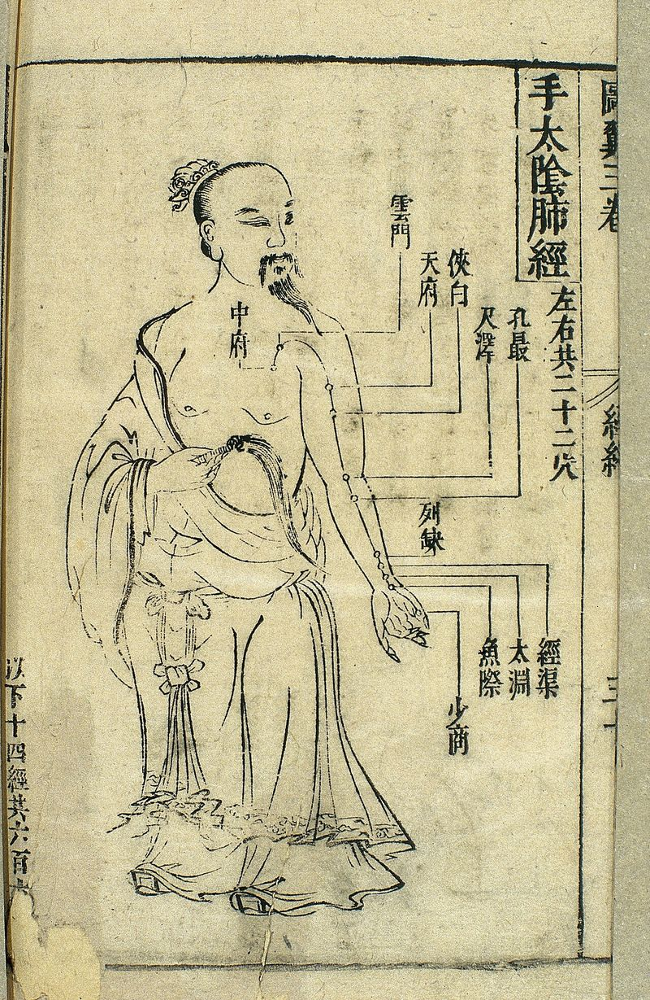
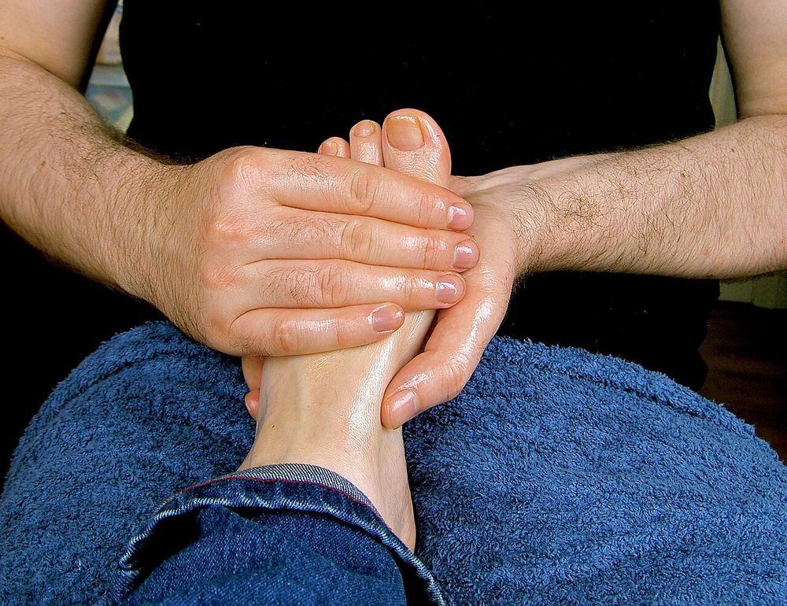

מעין שלמהMaayan Shlomo דיקור, עיסוי, רפלקסולוגיהacupuncture, massage, reflexology
קליניקה במרכז פנימה, דרך חנקין 58, חיפה.A clinic at the Pnima centre, 58 Derech Hankin, Haifa.
נעים להכיר, מעין.Meet Maayan.
דיקור, עיסוי ורפלקסולוגיה, בקליניקה שלה בחיפה.Acupuncture, massage and reflexology, in her own clinic in Haifa.
In Hebrew, maayan means a spring.
“מטפלת מקצועית עדינה, וקשובה”
“A professional, gentle and attentive therapist” (translated from Hebrew)
שלושה טיפולים, חדר אחד.Three treatments, one room.
גררו את הטבעת, או פשוט גללו.Drag the ring, or just scroll.



תמונות להמחשה, למעט התמונה של מעיןIllustrative photos, except Maayan’s portrait
המעיין המבעבעBubbling Spring
כך נקראת בדיקור הסיני נקודה בכף הרגל: המקום שבו הדיקור והרפלקסולוגיה נפגשים.That is the name Chinese acupuncture gives a point on the sole of the foot: where acupuncture and reflexology meet.
חדר אחד, חלון אל חיפה.One room, a window onto Haifa.
מתוך 19 ביקורות בגוגלfrom 19 Google reviews
שני בבוקר, שלישי אחר הצהרייםMonday mornings, Tuesday afternoons
“עובדת עם קופת הביטוח ומתאימה את הטיפול בהתאם לצורך”
“Works with the insurance fund and adapts the treatment to what’s needed” (translated from Hebrew)
Yair Kol · ביקורת בגוגלGoogle reviewמה כותבים אחרי טיפול.What people write after a treatment.
“מעיין שלמה מטפלת מקצועית עדינה, וקשובה, מחכה לכל טיפול אצלה בכליון עיניים וחוזרת הביתה רגועה, תענוג ממליצה מאוד.”
“Maayan Shlomo is a professional, gentle and attentive therapist. I can’t wait for every treatment with her and I go home calm. A pleasure, highly recommended.”
“מעין מהממת, מקצועית ומצויינת. אני לקוחה שלה כבר שנים, ואין ספק שאמשיך. אין על הטיפולים שלה. ממליצה בחום!”
“Maayan is amazing, professional and excellent. I’ve been her client for years and I’ll certainly continue. Nothing beats her treatments. Warmly recommended!”
“תודה למעין, ידי זהב. תודה על טיפול מרגיע ומועיל. הבריאות מעל הכל. מומלץ בחום”
“Thank you, Maayan, golden hands. Thank you for a calming, helpful treatment. Health above all. Warmly recommended.”
“מעין מדהימה! מקצועית, מקסימה ומטפלת בסביבה מרגיעה ונעימה.. ממליצה בחום!”
“Maayan is wonderful! Professional, lovely, and she treats you in a calm, pleasant setting. Warmly recommended!”
“מעיין מקסימה. מקום נקי ומסודר עם אוירה טובה. עובדת עם קופת הביטוח ומתאימה את הטיפול בהתאם לצורך”
“Maayan is lovely. A clean, tidy place with a good atmosphere. Works with the insurance fund and adapts the treatment to what’s needed.”
ביקורות מגוגל, כלשונן.Google reviews, translated from Hebrew.
הודעה למעין.A message to Maayan.
בוחרים טיפול ויום, וההודעה מוכנה לשליחה.Pick a treatment and a day; the message is ready to send.
שאלות קצרות.Short questions.
איפה הקליניקה?Where is the clinic?
במרכז פנימה, דרך חנקין 58, חיפה.At the Pnima centre, 58 Derech Hankin, Haifa.
באילו ימים מקבלים?Which days are open?
לפי השעות בגוגל: שני 8:30–13:30, שלישי 15:00–21:00.Per the Google listing: Monday 8:30–13:30, Tuesday 15:00–21:00.
אילו טיפולים יש?Which treatments are offered?
דיקור, עיסוי ורפלקסולוגיה.Acupuncture, massage and reflexology.
אפשר דרך הביטוח?Can I go through insurance?
באחת הביקורות בגוגל נכתב שמעין עובדת עם קופת הביטוח. כדאי לשאול אותה מה מתאים לביטוח שלכם.One Google review says Maayan works with the insurance fund. Ask her what fits your own plan.
איך קובעים?How do I book?
בוואטסאפ או בטלפון: 052-448-1056.On WhatsApp or by phone: 052-448-1056.